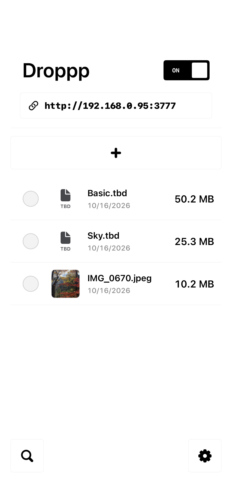
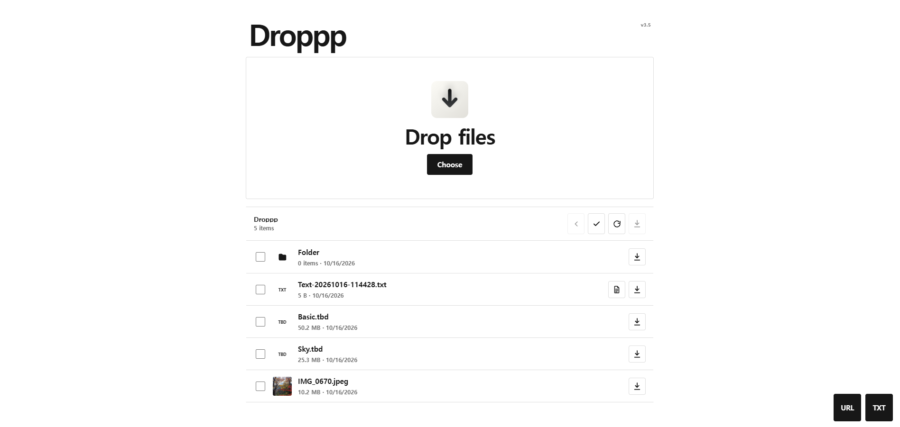
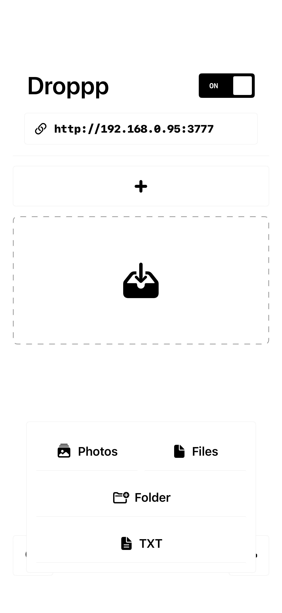
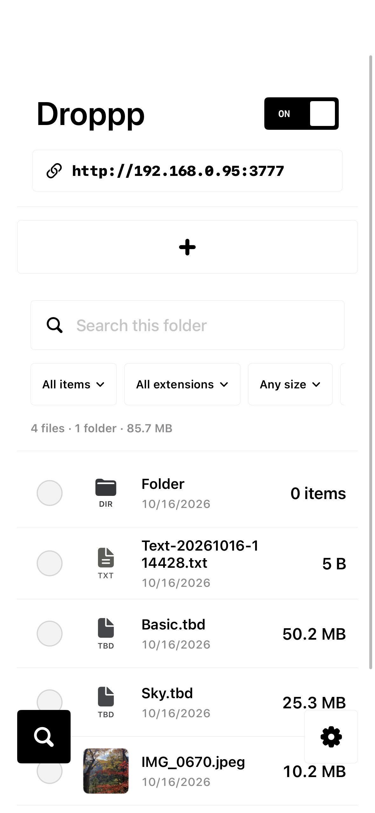
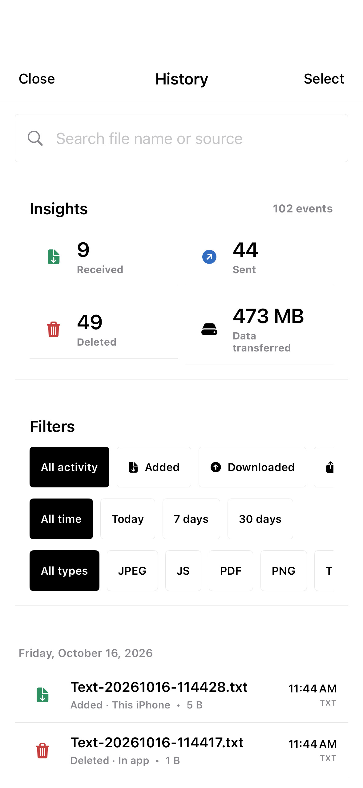
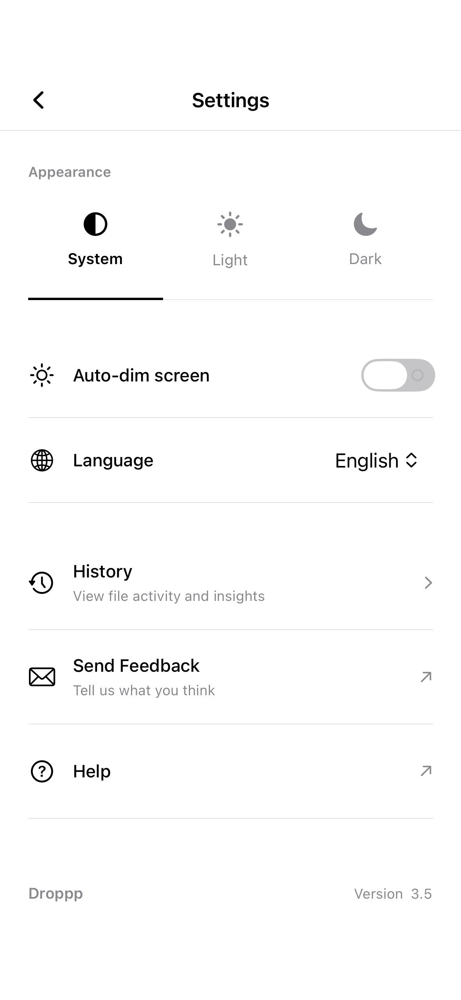

AT HOME OR AT WORK
Use the same Wi-Fi.
Connect both devices to the same Wi-Fi network, then open Droppp.
WI-FI & HOTSPOT FILE TRANSFER
Move files between your iPhone or iPad and a nearby browser. Over Wi-Fi or Personal Hotspot.
Made for iPhone & iPad.

01 No account.
02 No cable.
03 No cloud required.
01 / THE CONNECTION
Send photos, videos, documents, and ZIPs from a computer, phone, or tablet. All the other device needs is a browser.

Open Droppp and turn on the local server.
Use the exact address shown in Droppp on your connected device, or scan the QR code.
Drop files into the browser to upload, or browse your saved files and download them.
Keep Droppp open and your iPhone or iPad screen on while connected. Read the connection guide →
02 / INSIDE DROPPP
Add and organize files, find what you need, and choose how much activity to record. Simple controls for everyday transfers.
BRING IT ALL TOGETHER
Import from Photos or Files, create folders and text files, or connect an existing folder from the + menu.
Explore the guide01 / 04

FIND YOUR NEXT FILE
Search the current folder and narrow the list by item type, extension, or size. Your files stay easy to reach.
Explore the guide02 / 04

A CLEARER PICTURE
Review additions, downloads, and deletions in History. Turn on Disable history in Settings to stop recording new activity.
Explore the guide03 / 04

MAKE IT YOURS
Choose your appearance and language, dim the screen, or hide import success messages. Droppp also remembers your server’s ON/OFF setting.
Explore the guide04 / 04

Screenshots show an earlier version. The guide describes the current features.
03 / FILES & FOLDERS
Use Droppp’s library, the Files app, or a folder you connect. Access your files from the same browser page.
Open Files below the + button to access the folder shared with Apple’s Files app. Copy files between it and your Droppp library.
About FilesConnect a folder from Files, including iCloud Drive. Additions and deletions in that folder apply to the original location.
Connect a folderCreate nested folders, drag items into place, and share from Droppp. Use a browser on your connected device to view and download files or folders.
Browser transfersLESS BETWEEN YOU AND YOUR FILES
Keep your files close. Keep things simple.